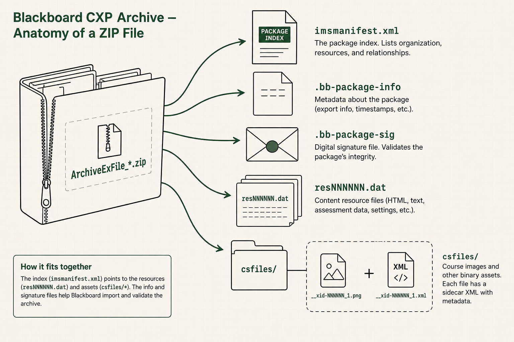
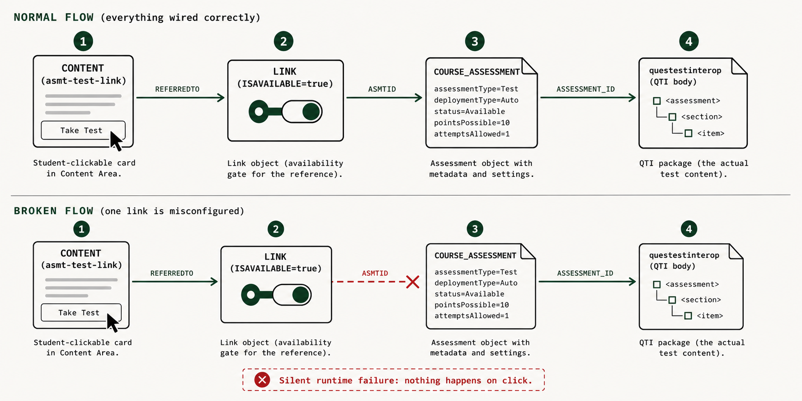
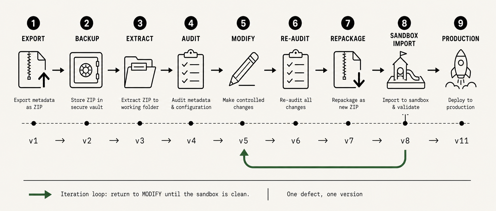
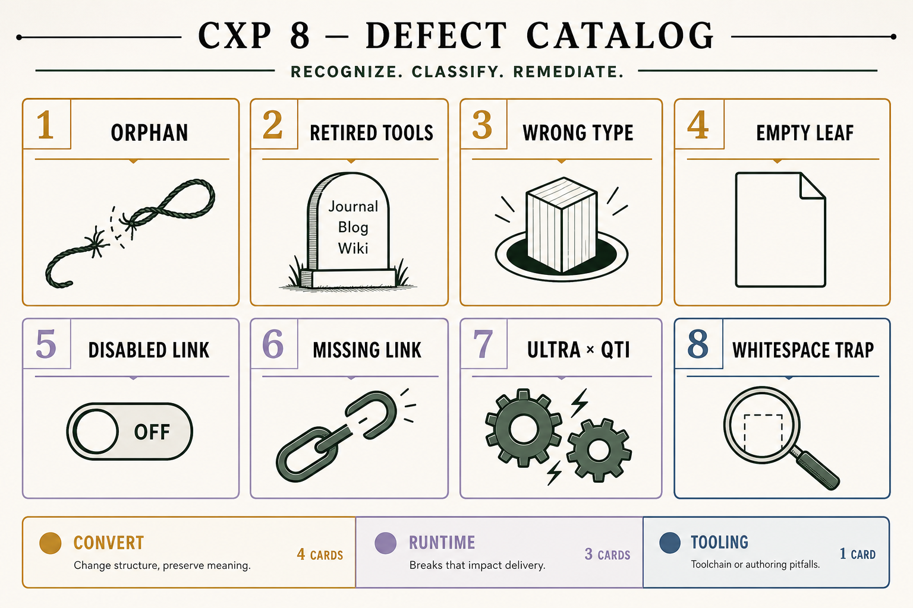
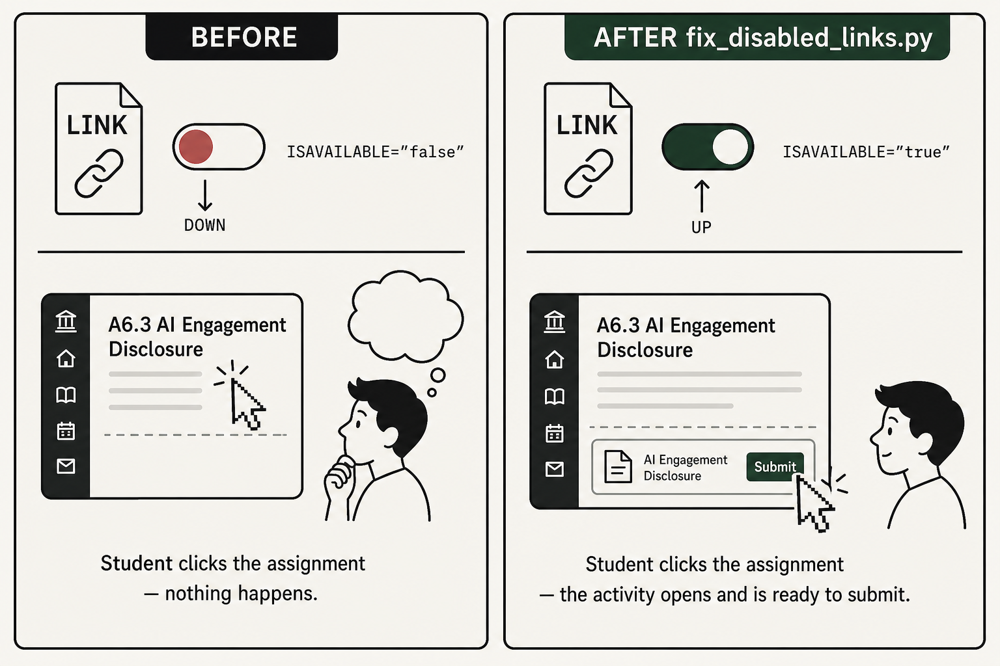
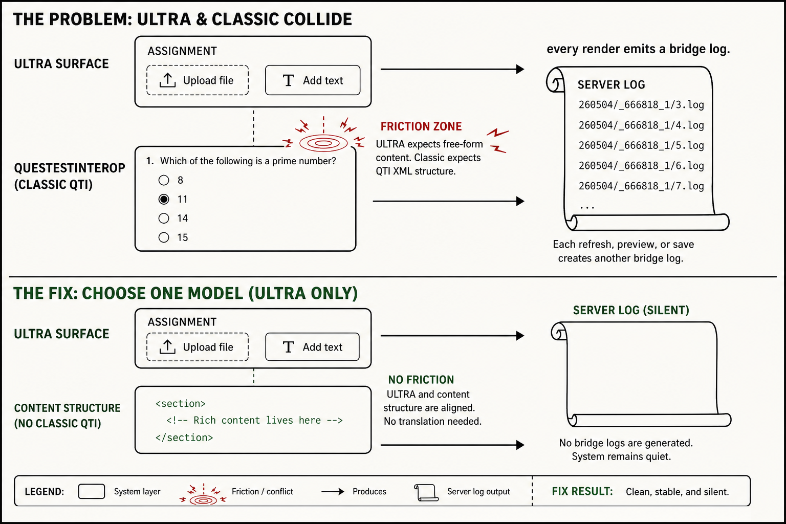
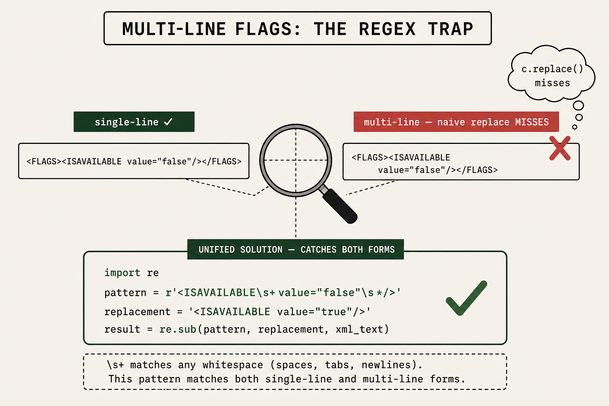

0. 가이드북 소개 / About this guidebook
이 가이드는 Blackboard에서 export한 CXP 패키지(ArchiveExFile_*.zip)를 로컬에서 수정한 뒤 같은 또는 다른 코스로 re-import할 때 발생하는 import 실패와 runtime 에러를 진단하고 고치는 실전 workflow다. 2026-05-04 [Summer Term] fix marathon (DOCT-α v1→v11, UND-β v1→v6, GRAD-γ v1→v5)에서 distill한 8-point recipe와 모든 successful Python scripts + 절대 금지 사항을 한 곳에 모았다.
- 코스를 학기마다 revise해서 import해야 하는 instructor / TA
- Codex/Claude Code-style coding agent에게 fix를 시킬 때 참고할 recipe가 필요한 사람
- 처음 Blackboard ULTRA로 코스를 옮겨야 하는 새 PM / instructional designer
이 가이드가 풀어주는 use case
- 코스 export ZIP을 받았는데 import 시 "content item failed to convert" 에러가 뜬다.
- Import는 됐는데 학생이 과제 / 토론을 클릭해도 안 열린다 (silent runtime failure).
- Click 시마다
MjYwNTA0L*같은 base64 access-code log reference가 쌓인다. - Due date가 옛 학기 그대로다.
- Module에 새 콘텐츠 / 이미지 / URL을 자연스럽게 추가하고 싶다.
- 한 부분만 selective import해서 빠르게 업데이트하고 싶다.
이 가이드의 한계
- Blackboard의 UI-side import dialog는 다루지 않는다 (institution마다 다름).
- Building Block / LTI 도구 등록은 admin이 해줘야 함.
- 여기 기록된 8개 defect class는 본 세션의 incident에서 관찰한 것만; 다른 failure mode (LDAP, gradebook 변환, 외부 도구 OAuth 등)는 따로 조사 필요.
1. CXP 패키지 해부 / Anatomy of a CXP package
1.1 파일 구조 / Files in the ZIP
Blackboard에서 export한 archive ZIP을 풀면 다음과 같은 구조가 나온다:
ArchiveExFile_*.zip 풀면:
├─ imsmanifest.xml ← 패키지 인덱스 (반드시 유효해야 함)
├─ .bb-package-info ← Blackboard 시스템 메타데이터
├─ .bb-log-info ← 패키지 빌드 로그 (정보성)
├─ .bb-package-sig ← 서명 (수정 후 재계산 필요 X — Blackboard 무시)
├─ res00001.dat ← 첫 번째 리소스 (XML)
├─ res00002.dat
├─ ...
├─ resNNNNNN.dat ← N번째 리소스
└─ csfiles/
└─ home_dir/
└─ __xid-NNNNNN_1.png ← 임베드된 이미지 / PDF / Word / Excel 등
__xid-NNNNNN_1.png.xml ← 사이드카 메타데이터

1.2 imsmanifest.xml — 패키지의 인덱스
imsmanifest.xml은 IMS Common Cartridge 표준의 manifest 형식. Blackboard 확장 attribute (bb:file, bb:title, bb:type)이 추가됨. 두 개의 핵심 블록:
<manifest ...>
<metadata>...</metadata>
<organizations default="toc00001">
<organization identifier="toc00001">
<item identifier="itm00001" identifierref="res00007">
<title>ROOT</title>
<item identifier="itm00016" identifierref="res00047">
<title>Module 6: Capstone</title>
...
</item>
</item>
</organization>
</organizations>
<resources>
<resource bb:file="res00001.dat" bb:title="Child Courses"
identifier="res00001" type="course/x-bb-childcourses"
xml:base="res00001"/>
<resource bb:file="res00047.dat" bb:title="Module 6: Capstone"
identifier="res00047" type="resource/x-bb-document"
xml:base="res00047"/>
...
</resources>
</manifest>
<organizations>= 학생이 보는 트리 (Module → Lesson → Item 구조)<resources>= 모든 .dat 파일과 csfiles의 declaration- 각
<item>의identifierref는<resource>의identifier와 매칭돼야 함 - 각
<resource>의bb:file은 실제 파일과 일치해야 함
1.3 LINK 체인 — visible item이 underlying data에 연결되는 방식
Asmt-test-link / forumlink / courselink CONTENT 아이템은 본인의 데이터를 직접 갖고 있지 않다. 별도의 LINK 리소스가 wrapper와 underlying data를 연결한다:
res00071 (CONTENT, asmt-test-link, ULTRA marker) ← 학생이 클릭하는 visible 아이템
│
↓ (LINK가 walk됨)
│
res00118 (LINK, ISAVAILABLE=true) ← 연결고리
│
↓ (REFERREDTO)
│
res00100 (COURSE_ASSESSMENT) ← assignment metadata
│
↓ (ASMTID)
│
res00015 (questestinterop) ← 실제 평가 데이터

2. 표준 워크플로 / Standard workflow

코스 revision은 다음 순서로 진행:
- Export — 원본 코스에서 archive (Blackboard UI: Packages and Utilities → Export Course).
- Backup — export한 ZIP을
03_Original-ZIPs-Backup/같은 디렉토리에 별도 보관. 이 파일은 절대 수정하지 않는다. - Extract — ZIP을 working dir에 풀어서 작업.
- Audit (sec. 4) — 8-point recipe 돌려서 baseline defect 확인.
- Modify — 콘텐츠 수정 / 새 자료 추가 / 날짜 변경.
- Re-audit — 수정 후 8-point 다시. 수정 자체가 새 defect을 만들 수 있음.
- Repackage — ZIP으로 다시 압축 (sec. 9).
- Sandbox import — 학생이 보는 환경 (sandbox course)에서 실제로 import해보고 모든 클릭 가능한 항목을 click하며 검증. Convert-time 로그 + runtime 동작 둘 다 확인.
- Production import — sandbox에서 통과하면 production.
v1, v2, …)으로 저장하면 rollback과 paper trail이 보장된다. AIL-606은 v1→v11까지 갔다.
3. 8-Point Defect Catalog

아래 8가지 defect class는 본 세션에서 직접 관찰·해결한 것. FAIL는 사용자 영향 있음, WARN는 informational, INFO는 메타. Tag:
- CONVERT — Blackboard import 시점에 명시적 에러로 실패
- RUNTIME — Import는 통과하지만 사용자가 클릭 / 사용 시 깨짐
- TOOLING — Fix 작성할 때 빠지기 쉬운 함정
Manifest는 declare하는데 실제 .dat 파일이 ZIP에 없거나, 그 반대 케이스. Convert 시점에 "missing referenced file" 류 에러로 실패하거나 silent skip.
Diagnostic
comm -23 \
<(grep -oE 'identifier="res[0-9]+"' imsmanifest.xml | sort -u) \
<(ls *.dat | sed 's/\.dat$//' | sort -u)
Fix
- 누락 파일이 있어야 할 경우: 원본 archive에서 복사
- 없어도 될 경우: manifest의
<resource>declaration 삭제
실제 사례
DOCT-α v1: Codex가 res00104~126 (LINK 23개) + res00022~25 (announcements 4개)를 .dat 파일에서 삭제했지만 manifest에는 declaration이 그대로 남음. 27개 orphan declaration → 패키지 무결성 깨짐.
Blackboard ULTRA는 Journal, Blog, Wiki 도구를 지원하지 않는다. <CONTENTHANDLER value="resource/x-bb-journallink"/> 같은 retired handler를 쓰는 visible content가 있으면 import 시 명시적 실패.
Symptom (import log)
[Journal Item] — Blogs aren't supported at this time and were removed.
[Journal Item] — The content item failed to convert.Cascade chain
- Blackboard sees
res00013(x-bb-blog) → "Blogs aren't supported, removed" → drops res00013 - res00122 LINK points to res00013 (now gone) → orphan LINK silently dropped
- res00068 CONTENT has
journallinkhandler expecting target → can't convert
Fix (3 things together)
- Visible CONTENT의
CONTENTHANDLER를resource/x-bb-document로 +RENDERTYPE을REGULAR로 - Tool data resource 파일 삭제 (BLOG, JOURNAL, WIKI 페이로드)
- 이를 잇던 LINK 파일 삭제
- 두 deletion 모두 manifest에서
<resource>declaration 제거
📝 Script: fix_journal_blog_dependency.py
Manifest의 bb:type이 선언한 종류와 실제 .dat 파일의 root XML element가 일치하지 않음.
Canonical example
| res ID | Manifest bb:type | Actual root | Result |
|---|---|---|---|
| res00128 | course/x-bb-coursemessagefolder | <questestinterop> | FAIL |
How it happens
Coding agent가 "이 자리에 새 assessment를 넣자"라고 판단하고 기존 res ID에 다른 type의 페이로드를 덮어씀. Manifest는 안 건드림 → 충돌.
Fix
해당 .dat 파일을 원본에서 복원. 다른 resource ID를 절대 다른 type으로 덮어쓰지 마라; 새 resource를 추가하고 새 ID를 발급하라.
학생에게 보이는 <CONTENT> 아이템이:
<DESCRIPTION value=""/>(빈 description) AND<TEXT/>(빈 body) ANDISFOLDER value="false"(folder 아님) AND<FILES><FILE없음 (첨부 파일도 없음)
Blackboard converter가 거부.
False positives 주의
asmt-test-link/forumlink/courselinkwrapper는 의도적으로 비어있음 (LINK 통해 target 가리킴) — skipULTRA_ASSESSMENT_MARKER=true인 ULTRA assignment surface — skip (defect 7 참고)resource/x-bb-folder/x-bb-lesson— folder 자체 — skip
Fix
- 원본 archive에서 description + body 복원
- 또는 folder로 type 변경
- 또는 minimum content 직접 추가 (예: TITLE만 message로 사용)

Visible click-target (asmt-test-link / forumlink / courselink)을 underlying assessment / forum에 연결하는 <LINK>가 <ISAVAILABLE value="false"/>로 비활성화돼있음. 학생이 클릭해도 안 열림.
Symptom
Convert-time 에러 없음. Gradebook 컬럼은 만들어짐. Click 시 아무것도 안 일어나거나 MjYwNTA0L* 같은 base64 access-code reference 표시 (decoded: 260504/_666818_1/2.log — 서버 로그 경로일 뿐, 실제 에러 메시지 아님).
Origin (Spring archive carryover)
이전 학기에 instructor가 과제를 미리 만들어두고 release 시점까지 비활성화했던 흔적. Export 시 disabled flag 그대로 carry over됨.
Fix
import re
c = re.sub(
r'<ISAVAILABLE\s+value="false"\s*/>',
'<ISAVAILABLE value="true"/>',
c,
)📝 Script: fix_disabled_links.py
실제 사례
DOCT-α v5: 6개 핵심 과제 ([User Testing Assignment], [Final Capstone Submission], [Storyboard Challenge], [Design Draft], [Usability Plan], [Case Study]) 모두 disabled LINK 때문에 안 열림.
Defect 5보다 더 심각: LINK 파일과 manifest declaration이 둘 다 함께 stripped됐음. 패키지 내부 일관성은 유지됨 (orphan declaration 없음) → defect 1 audit으로 안 잡힘.
Diagnostic
Visible click-target CONTENT (handler가 asmt-test-link / forumlink / courselink) 중 available LINK가 REFERRER로 연결돼있지 않은 것을 찾는다.
Fix
원본 archive에서 LINK 파일을 복원하고, ISAVAILABLE=true로 flip하고, manifest에 declaration 추가.
📝 Script: restore_missing_links.py
실제 사례
- UND-β: 원본 31개 LINK → cur 24개. 7개가 stripped (모두 disabled였던 것을 Codex가 "쓸모없는 거" 판단해서 삭제). 7개 과제가 안 열림.
- GRAD-γ: 원본 17개 LINK → cur 0개. Option A restructure 때 모조리 삭제됨. 14개 과제 + 2개 토론/courselink 안 열림.

가장 어려운 케이스. Asmt-test-link 아이템에 <EXTENDEDDATA><ENTRY key="ULTRA_ASSESSMENT_MARKER">true</ENTRY></EXTENDEDDATA>가 있고, 그 LINK chain의 끝 questestinterop 파일이 <section> 안에 <item> 콘텐츠를 가지면 발생.
Symptom
아이템은 정상적으로 열림. 하지만 render할 때마다 server log에 sequential entry가 쌓임: 260504/_666818_1/3.log, 4.log, 5.log, ...
Root cause
Marker는 ULTRA에게 "이건 ULTRA-native assignment surface (file upload + text submission)으로 render해라"라고 알려줌. 그러나 underlying QTI는 classic Blackboard test format (<questestinterop><assessment><section><item>). ULTRA가 두 model 사이를 매번 bridge하면서 conversion-trace log entry를 emit.
Fix — empty section preservation
QTI body의 <section> 안 <item>을 모두 제거. Marker는 그대로 유지. Empty section = "이건 ULTRA assignment, classic 질문 변환 시도하지 마"라는 신호.
<questestinterop>
<assessment title="...">
<assessmentmetadata>...</assessmentmetadata>
<rubric>...</rubric>
<presentation_material>...</presentation_material>
<section>
<sectionmetadata>...</sectionmetadata>
<!-- 비어있어야 함; <item> 없음 -->
</section>
</assessment>
</questestinterop>asmt-test-link wrapper + ULTRA marker + 의도가 ULTRA assignment (file upload)일 때만 적용한다. CAT-531의 Module 1-6 Quiz처럼 multiple-choice 진짜 quiz가 들어있으면 절대 <item>을 지우면 안 됨 (quiz 깨짐).
📝 Script: fix_ultra_qti_conflict.py
v6 실패 사례 (DO NOT REPEAT)
이 log를 silence하려고 ULTRA marker 자체를 제거하면 → 아이템이 ULTRA에서 안 열림. Marker는 ULTRA rendering의 trigger다. QTI body를 비우는 것이 정답이지, marker를 제거하는 것이 아니다.

Defect 5/6 fix script를 짤 때 가장 빠지기 쉬운 함정.
The trap
Blackboard의 LINK XML은 두 가지 포맷으로 나옴:
Single-line:
<FLAGS><ISAVAILABLE value="false"/></FLAGS>
Multi-line:
<FLAGS><ISAVAILABLE
value="false"/></FLAGS>
같은 archive 안에서도 두 포맷이 섞임. Naive single-line literal replace는 multi-line case를 silent하게 miss한다.
Wrong (single-line literal)
c = c.replace(
'<ISAVAILABLE value="false"/>',
'<ISAVAILABLE value="true"/>'
)
# Multi-line 케이스 7개 중 5개 놓침Right (regex with whitespace tolerance)
import re
c = re.sub(
r'<ISAVAILABLE\s+value="false"\s*/>',
'<ISAVAILABLE value="true"/>',
c
)
# 모든 케이스 매치실제 사례
UND-β v2 fix: 7개 disabled LINK 중 2개만 fix됐고 5개가 그대로. v4의 audit에서 발견 → multi-line tolerant regex로 재적용.
4. 진단 도구 — 8-Point Audit Script
아래 스크립트는 위 8가지 defect를 한 번에 검사한다. 패키지를 폴더에 풀고 그 경로를 인자로 넘기면 PASS/FAIL 리포트를 출력. Exit code 0 = clean, 1 = needs work.
python audit_8point.py /path/to/extracted/package예시 출력 (모두 통과):
======================================================================
8-Point Blackboard ULTRA Import Recipe Audit -- /tmp/cat100_audit
======================================================================
[PASS] 1. Orphan manifest decls
decls=211 files=211 missing=0 orphan=0
[PASS] 2. Retired-tool handlers in CONTENT
hits=0 []
[PASS] 3. Wrong-type substitution
violations=0 []
[PASS] 4. Empty leaf content items
leaves=0 []
[PASS] 5. Disabled LINKs blocking visible items
disabled=0 []
[PASS] 6. Click-targets without available LINK
orphan_clicks=0 []
[PASS] 7. ULTRA-marker x classic-QTI conflict
conflicts=0
[PASS] 8. Whitespace-tolerant ISAVAILABLE coverage
multiline_misses=0
Overall: ALL PASS
5. Troubleshooting Decision Tree
샌드박스 import 결과를 보고 다음 순서로 추적:
6. 절대 금지 사항 / What NOT to do
이 세션에서 직접 깨졌거나, 실수했을 때 복구 비용이 큰 것들:
03_Original-ZIPs-Backup/ArchiveExFile_*.zip 파일은 절대 수정하지 마라. 모든 fix는 working copy에서. 원본은 ground truth + rollback 자료.
bb:type과 .dat 파일 root XML element가 일치해야 함. 새 콘텐츠가 필요하면 새 res ID 발급 + 새 declaration 추가.
<item>을 비우는 것.
<response_lid> 포함)에서 item 제거하면 quiz가 통째로 깨진다.
c.replace('<ISAVAILABLE value="false"/>', ...) 식의 literal replace는 multi-line FLAGS XML 케이스를 silent하게 miss. 항상 re.sub(r'<ISAVAILABLE\s+value="false"\s*/>', ...).
<FORUM> data + forumlink wrapper + LINK + manifest declaration + item-tree placement 모두 필요. 손으로 하면 ID 충돌 / chain 깨짐 위험 큼. 기존 generic Discussion board를 subject prefix ([M1 [Tension Mapper]] 등)로 재사용하는 게 훨씬 안전.
2026-05-30 23:59:00 CDT. 5월 - 11월 첫째 일요일은 CDT (Central Daylight Time, UTC-5), 그 외는 CST (UTC-6). Summer term은 모두 CDT. Blackboard parser는 timezone string을 검증하지는 않지만 일관되게 쓰는 게 나음.
.bb-package-sig 재계산 시도
이 서명 파일은 무시해도 됨 (Blackboard import는 검증하지 않음). 재계산은 어차피 불가능 (Blackboard의 private key 필요). 그냥 두고 ZIP하면 됨.
7. 실제 사례 — [Summer Term] Fix Marathon
본 가이드의 distillation source. 단일 일자 (2026-05-04) 안에 세 코스의 11회+의 iteration을 기록.
DOCT-α (LXD doctoral capstone) — 11 iterations
| Build | Defect 적용 | 결과 |
|---|---|---|
v1 | baseline (Codex 5/3 build) | D6 + D5 latent |
v2 | [Journal Item] payload 복원 | D2 발현 |
v3 | D2 fix (Journal/Blog dependency 제거) | discussion 작동, 과제 안 열림 |
v4 | 콘텐츠 reorganization (AI Coding Assistants 섹션 Module 6 안으로) | 여전히 안 열림 |
v5 | D5 fix (6 disabled LINK flip) | 열리지만 access-code log 발생 |
v6 | 실패 — ULTRA marker 제거 시도 | 아이템 안 열림 (revert) |
v7/v8 | v5 byte-exact 복원 | v5 상태로 복귀 |
v9 | D7 fix 2개 아이템 검증 | access-code log 사라짐 |
v10 | D7 fix 6개 ULTRA 아이템 모두 | 모두 통과 |
v11 | 3개 generated diagram 임베드 (design.md, 7-step, guardrails) | 최종 / 25.2 MB |
UND-β (Communication, undergrad 1-2) — 6 iterations
| Build | Defect 적용 |
|---|---|
| baseline | 5/2 build |
v2 | D6 fix (7개 missing LINK 복원 + COURSE_ASSESSMENT 검증) |
v3 | 17 graded item 모두 [Summer Term] dates로 갱신 (no Sundays, no Juneteenth, ENFORCE_DUE_DATE matched to baseline) |
v4 | Module 6 Lesson 6.2 — AI + GitHub Pages 콘텐츠 + Playwright screenshots; D8 fix (multi-line ISAVAILABLE 5개 추가 발견) |
v5 | 학부 1-2학년 톤 재작성 + 큐레이션된 YouTube/Medium/GitHub Blog 링크 |
v6 | 7개 ChatGPT-generated diagram 임베드, M5 dual-path AI avatar (SadTalker + ElevenLabs vs PowerPoint Recording + Gemini Live), [Teaching Sim]→[Teaching Sim] 통일, M1 [Tension Mapper]+[Ethics Tutor] URL+screenshot, M2 GitHub Codex 표현 명확화. 최종 / 18.3 MB |
GRAD-γ (Critical/Cultural Aspects of Tech, master's) — 5 iterations
| Build | Defect 적용 |
|---|---|
| baseline | 5/2 Option A restructure |
v2 | D6 fix — 17개 LINK 모두 stripped됐던 것 복원 (가장 심각한 케이스) |
v3 | M1 [Tension Mapper] / M2 [Teaching Sim] / M4 [Ethics Tutor] 가이드 + Playwright 스크린샷 + [Discussion Board] prefix-tagged discussion 패턴 |
v4 | 17 graded item [Summer Term] dates 갱신 |
v5 | 2개 generated concept diagram 추가 ([Tension Mapper] + [Ethics Tutor] anchors). 최종 / 38.9 MB |
<item>을 지울 수 없다. Functional impact zero (학생들 quiz 정상 응시), runtime telemetry log 누적은 무시. Documented caveat.
8. 부가 기술 / Beyond defect fixes
8.1 이미지 / 미디어 임베드
슬라이드, infographic, 스크린샷을 콘텐츠 페이지에 inline rendering하려면 세 가지가 동시에 필요:
csfiles/home_dir/에__xid-NNNNNN_1.<ext>형식으로 파일 복사 (xid는 충돌 방지 위해 990000 이상 권장)- 같은 이름의 sidecar XML (
__xid-NNNNNN_1.<ext>.xml) 생성 imsmanifest.xml의<resources>블록에<resource>declaration 추가
그 다음 콘텐츠 페이지 본문 HTML에서 Blackboard의 embed syntax로 참조:
<a data-bbid="img-NNNNNN_1"
data-bbfile="{"linkName":"diagram.png",
"mimeType":"image/png",
"alternativeText":"Description",
"isDecorative":false,
"render":"inline"}"
href="@X@EmbeddedFile.requestUrlStub@X@bbcswebdav/xid-NNNNNN_1">
</a>📝 Script: embed_image.py — 위 세 단계를 한 번에.
8.2 콘텐츠 페이지 본문 교체
Blackboard의 콘텐츠 본문은 <CONTENT>...<BODY><TEXT>HTML</TEXT></BODY> 안에 entity-encoded HTML로 저장됨. < → <, > → > 등.
📝 Script: replace_body.py — 본문만 교체, 나머지 (DATES, FLAGS, CONTENTHANDLER, PARENTID...)는 보존.
python replace_body.py res00157.dat new_body.html \
--updated "2026-05-04 04:00:00 CDT"8.3 Due date 일괄 갱신
Gradebook 리소스의 <OUTCOMEDEFINITION> 블록 안 <DUE> 필드. JSON으로 schedule을 정의하면 일괄 적용:
{
"Module 1: Quiz": "2026-05-27 23:59:00 CDT",
"Module 1: Assess - [Tension Rationale]": "2026-05-30 23:59:00 CDT",
...
}📝 Script: update_due_dates.py
제약: no Sundays, no Juneteenth (2026-06-19), 학기 window 안. ENFORCE_DUE_DATE는 baseline 그대로 유지 (instructor가 UI에서 항목별 결정).
8.4 Slim 패키지 — selective import
전체 코스를 다시 import하지 않고 한 모듈만 업데이트하고 싶을 때.
전략: 해당 Module의 item subtree + 시스템 리소스 (res00001 Child Courses + res00010 Content Handler Data + .bb-package-info / .bb-log-info / .bb-package-sig)만 포함한 slim ZIP 빌드. DOCT-α 예: 20MB → 294KB.
또는 더 간단히: Blackboard UI의 selective import 다이얼로그에서 full package를 import하되 원하는 module만 체크.
8.5 Discussion board 연결 — 새 FORUM 만들지 마라
모듈별 토론을 추가하려고 새 <FORUM> 리소스를 만드는 건 high-risk (ID 충돌, item-tree 깨짐). 안전한 패턴:
- 기존 코스-wide Discussion board (예: "[Course Discussion Board]") 활용
- 각 모듈 Explore 페이지에서 subject prefix 약속 (
[M1 [Tension Mapper]],[M2 [Teaching Sim]],[M4 [Ethics Tutor]]) - Post format 명시 (예: 100-150 단어, peer-reply 1개 이상)
구조 변경 없이 토론 connection 달성. CAT-531에서 사용한 패턴.
9. 패키징 & 검증 / Packaging & verification
9.1 PowerShell Compress-Archive
Windows에서 가장 안전한 방법:
$src = "C:\path\to\extracted_package_dir"
$dst = "C:\path\to\output\package_v6.zip"
if (Test-Path $dst) { Remove-Item $dst }
Compress-Archive -Path "$src\*" -DestinationPath $dst -CompressionLevel Optimal
$hash = (Get-FileHash $dst -Algorithm SHA256).Hash
$size = (Get-Item $dst).Length
Write-Output "Packaged: $size bytes / SHA256 $hash"Compress-Archive는 ZIP에 backslash separator를 쓸 수 있다. unzip이 경고 ("appears to use backslashes as path separators") 하지만 Blackboard import는 정상 작동. 무시 가능.
9.2 Bash zip (Linux/Git Bash)
cd /path/to/extracted_package_dir
zip -r ../package_v6.zip . -x "*.DS_Store"9.3 Verification checklist
- 패키지를 다시 풀어서 8-point audit 돌려보기 (압축 시 손상 없는지 확인)
- Manifest declared count == .dat file count
- SHA-256 기록 (rollback과 reproducibility)
- Sandbox 코스에 import → convert log 확인
- 모든 visible item을 직접 click하여 정상 open되는지 확인
- Gradebook 컬럼 생성 + due date 정확한지 확인
- 학생 view (또는 instructor preview)로 한 번 더 확인
10. FAQ
access-code log MjYwNTA0L*이 뭔가요?
260504/_666818_1/2.log 같은 서버측 로그 파일 경로. 실제 에러 메시지가 아님 — 에러 내용은 그 path의 로그 파일에 들어있음. 로그 내용을 확인하려면 Blackboard admin에게 그 경로를 알려주고 파일을 pull해달라고 요청. 학생이 보는 view에는 표시되지 않으므로 functional impact 없을 수 있음.왜 ULTRA assignment surface인데 underlying QTI에 <item>이 있는 패키지가 만들어지나요?
- 원본 코스가 classic Blackboard에서 시작했고 ULTRA로 마이그레이션될 때 marker만 추가됨 — body의 questestinterop 구조는 옛 그대로
- "Empty assessments converted to Question Banks" 같은 convert-time 경고를 silence하려고 누군가 (예: Codex)
<item>을 hand-add한 경우
<item>을 비우는 것 (assignment 의도일 때).fix script 돌리니 manifest의 <organizations>가 두 개가 됐어요
find('<organizations>') 같은 single-string find가 multi-line attribute 케이스를 못 잡음 (<organizations\n default="..."> 형식). Regex로 r'<organizations\b.*?</organizations>' 매칭하면 해결.한 modular 만 update하고 싶은데 selective import vs slim 패키지 어느 쪽이 좋아요?
res00001 + res00010 같은 시스템 리소스 의존성 + 새 manifest 빌드가 필요해서 손이 많이 감. 단, 패키지가 매우 크고 (수십 MB) 또는 institutional Blackboard가 selective import를 disable했다면 slim이 유일한 옵션.일관된 xid number는 어떻게 정하나요?
__xid-190865580_1). 새 미디어를 추가할 때는 훨씬 더 큰 prefix를 쓰는 게 충돌 방지에 안전. 본 세션에서는 990000~999999 범위 사용 (course별로 992xxx, 993xxx, 994xxx). 기존 코스의 xid 분포를 먼저 확인하고 그보다 명확히 큰 범위 선택.왜 .bb-package-sig를 다시 만들 필요가 없나요?
학생이 file을 submit해야 하는데 ULTRA assignment surface로 나오게 하고 싶어요
- Wrapper의
CONTENTHANDLER가resource/x-bb-asmt-test-link - EXTENDEDDATA에
<ENTRY key="ULTRA_ASSESSMENT_MARKER">true</ENTRY> - LINK chain이 끝나는 questestinterop 파일의
<section>이 비어있음 (<sectionmetadata>만,<item>없음)
패키지 안에 학생 데이터 (제출물, 성적)이 섞여 있어요
res*ATTEMPT*.datres*SUBMISSION*.datusers.xmlcsfiles/home_dir/users/- Gradebook의
<ATTEMPT>블록
이 가이드의 fix script를 다른 LMS (Canvas, Moodle)에도 적용 가능한가요?
bb:file, bb:title, bb:type)에 specifically 의존. Canvas와 Moodle은 자체 export format을 쓰며 manifest 구조가 다름. 8-point recipe의 concept은 transfer 가능 (orphan declarations, retired tools, disabled flags…)이지만 code는 그대로 안 됨.11. Downloads
Blackboard CXP Fix Skill — Claude Code / Codex CLI 등록용
이 가이드의 8-point recipe + 모든 fix script + reference 노트를 자동 invocation용 skill 번들로 묶었음. 개인정보 없이 순수 스킬만 등록 가능. 다른 instructor / TA / coding agent가 그대로 받아서 쓸 수 있음.
unzip blackboard-cxp-fix-skill.zip -d ~/.claude/skills/모든 스크립트 — MIT-style ("use freely with attribution"). Python 3.8+ + 표준 라이브러리만 사용.
Recommended workflow
audit_8point.py베이스라인- Defect 발견 → 해당 fix script 적용
audit_8point.py재검증- 모두 PASS → packaging
12. References
Primary session record
Desktop\24_Teaching\Summer2026_CourseRevisions_2026-05-01\AIL606_IMPORT_FIX_RECORD_2026-05-04.md— full v1→v11 incident record~\.claude\projects\C--Users-jewoo\memory\reference_blackboard_ultra_import_fixes.md— auto-memory recipeObsidianVault\wiki\sources\[Summer Term] Course Prep Import Fix Marathon 2026-05-04.md— vault session record
Standards
- IMS Common Cartridge — manifest 표준 base
- Blackboard ULTRA Course Materials — ULTRA-supported content types
- WCAG 2.2 Quick Reference — 접근성
Related entity pages (vault)
wiki/entities/[Summer Term] UA Course Prep.mdwiki/entities/[Tension Mapping App].mdwiki/entities/[Ethics Tutor].md
Auto-memory entries
project_summer2026_courses.mdreference_blackboard_ultra_import_fixes.md← 이 가이드의 distillation 원본feedback_html_guides.md— HTML guidebook 패턴 (이 페이지가 따르는 형식)
Author
Jewoong Moon, Ph.D.Assistant Professor of Instructional Technology
Educational Leadership, Policy, and Technology Studies (ELPTS)
University of Alabama
jmoon19@ua.edu
Disclosure
이 가이드는 2026-05-04 일자 [Summer Term] fix marathon 결과를 정리한 practical onboarding guide다. Blackboard internals은 시간이 지나면 변할 수 있으며, 이 가이드는 본 세션에서 직접 재현한 8가지 defect class만 다룬다. 다른 failure mode (LDAP integration, gradebook calculation columns, 외부 도구 OAuth 등)는 별도 조사가 필요하다. 모든 fix는 production 적용 전 sandbox에서 검증할 것.